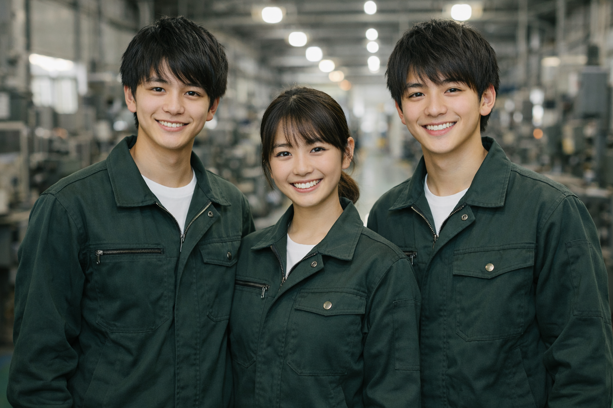
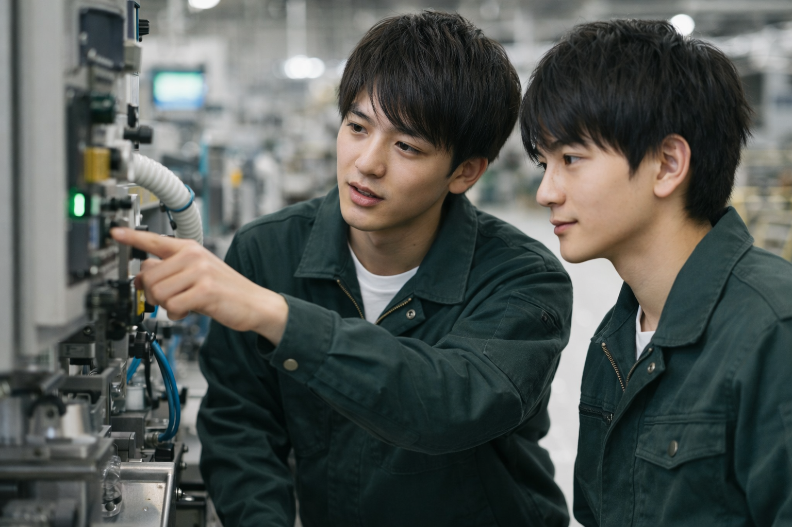
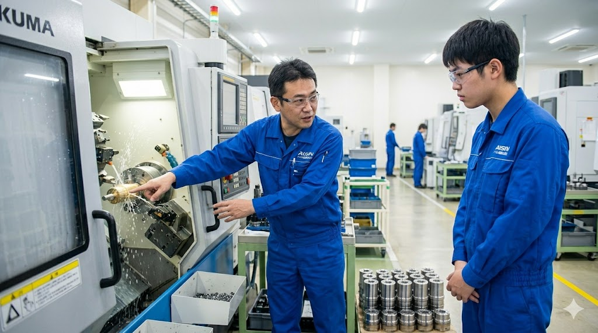
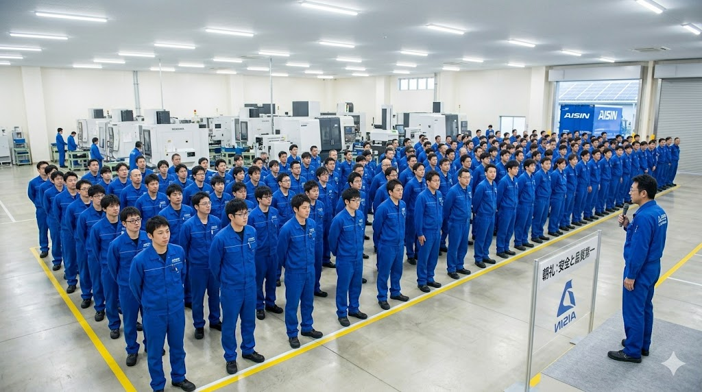

- TOP
- 社員を知る

People
ー Voices from our team ー
Interviews
現場で汗を流す先輩から、ラインを設計する技術職、オフィスで会社を支える総合職まで。
年齢も、入社経路も、キャリアもさまざま。
その一人ひとりの"ことば"から、アイシン高丘東北の姿が見えてきます。

INTERVIEW 01

INTERVIEW 02

INTERVIEW 03

INTERVIEW 04
INTERVIEW 05

INTERVIEW 06

INTERVIEW 07

INTERVIEW 08

INTERVIEW 09
Real Voices
休みがしっかり取れるから、家族との時間も趣味の時間も大事にできる。「工場＝休めない」は、昔の話だと思う。
中途で未経験から入りましたが、OJTがすごく丁寧で、半年で一人前扱いしてもらえました。年齢関係なく聞ける雰囲気が好きです。
社員食堂のご飯がおいしくて、朝来るのが楽しみになるレベル。シャワールームもあるので、退勤時に気持ちよく帰れます。
地元で、転勤なく、世界に届くクルマに関わる仕事ができる。宮城を離れたくなかった自分にはピッタリの会社でした。